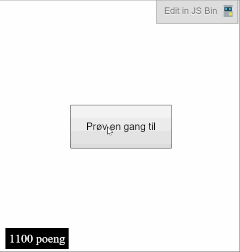
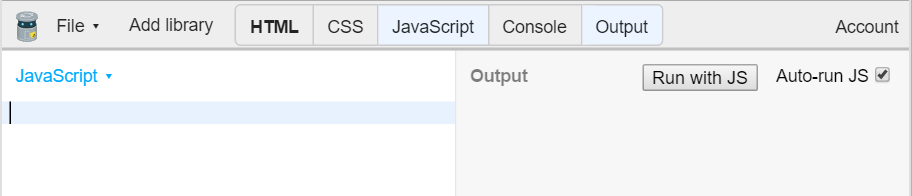
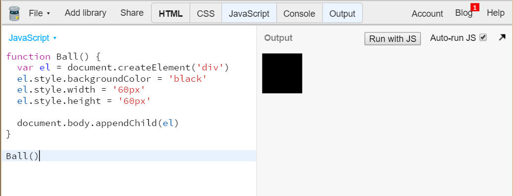

Denne oppgaven viser deg hvordan du kan lage et spill med JavaScript og dele det med vennene dine. Spillet kalles Trykkomania fordi det handler om å trykke på en ball flest mulig ganger før tiden renner ut.

Steg 1: Åpne JS Bin
Vi skal bruke JS Bin (http://jsbin.com) for å lage spillet. Hvis du aldri har brukt JS Bin før, ta en titt på oppgaven Hei JavaScript.
Velg å vise JavaScript og Output. Skjul de andre fanene ved å trykke på de.

I JavaScript skriver vi koden.
I Output vises websiden.
Når du starter er begge fanene tomme.
Steg 2: Lage en ball
Vi skal bruke JavaScript til å lage innholdet på websiden. Dette betyr at vi skal bruke JavaScript til å lage HTML. Du trenger ikke kunne noe spesielt om HTML, men om du ønsker lære om HTML, se oppgaven Internett.
Sjekkliste
Vi begynner med å lage en funksjon som heter Ball:
functionBall() {
}
Inni funksjonen lager vi ett nytt div-element:
functionBall() {
var el = document.createElement('div');
}
var el betyr at elementet får navn el.
Vi kan nå gi elementet en stil:
functionBall() {
var el = document.createElement('div');
el.style.backgroundColor = 'black';
el.style.width = '60px';
el.style.height = '60px';
}
el.style.backgroundColor = 'black' gjør ballen svart.
el.style.width = '60px' gjør ballen 60 piksler bred.
el.style.height = '60px' gjør ballen 60 piksler høy.
La oss legge ballen til siden:
functionBall() {
var el = document.createElement('div');
el.style.backgroundColor = 'black';
el.style.width = '60px';
el.style.height = '60px';
document.body.appendChild(el);
}
For at ballen skal vises, må vi kjøre koden:
Ball();
Vises en "ball" i Output?

Ok, så den var ikke akkurat rund. Vi kan bruke el.style.borderRadius for å runde av hjørnene.
Siden ballen er 60px bred og høy, så avrunder vi kantene med 30px, altså halvparten av 60.
Legg koden under de andre el.style-setningene:
el.style.borderRadius = '30px';
Fikk du en rund ball?
Utforsk
Om du ønsker en annen form, prøv andre verdier enn 30px for avrundingen. Hvordan ser 5px ut?
Akkurat nå vises ballen helt øverst til venstre i Output. La oss flytte den rundt omkring.
Vi bruker el.style.position = 'fixed' for å fortelle at vi ønsker plassere ballen i forhold til kantene i vinduet. 50% fra toppen blir da el.style.top = '50%'.
Nå har du en ball som spretter rundt. La oss legge til poeng. Vi har laget en poeng-komponent som du kan bruke, så kommer du raskere i gang. Poeng er bygd opp likt som Ball, så du må gjerne lese gjennom og se om du forstår den.
Sjekkliste
Legg til koden for komponenten Poeng:
/**
* Poeng - viser poengsum nede i venstre hjørne.
*
* Bruk:
* var poeng = Poeng(); // viser poengsummen
* poeng.øk(); // øker poengsummen med 100
* poeng.nullstill(); // setter poengsummen til 0
*
*/functionPoeng() {
var el = document.createElement('div');
el.style.position = 'fixed';
el.style.bottom = '5px';
el.style.left = '8px';
el.style.padding = '5px';
el.style.backgroundColor = 'black';
el.style.color = 'white';
var _poeng = 0;
el.innerHTML = _poeng + ' poeng';
document.body.appendChild(el);
el.øk = function () {
_poeng += 100;
el.innerHTML = _poeng + ' poeng';
};
el.nullstill = function () {
_poeng = 0;
el.innerHTML = _poeng + ' poeng';
};
return el;
}
For at poengsummen skal vises, må vi kjøre Poeng() en gang, slik vi også gjorde med Ball().
Legg denne linjen over Ball():
var poeng = Poeng();
var ball = Ball();
Vises "Poeng 0"?
For å holde orden på programmet er det lurt å ha det som skjer i toppen. Funksjoner kan brukes likevel om de ikke står først, så flytt function Ball og function Poeng ned til bunnen.
Du er nå kommet så langt at det kan være kult å teste spillet. Ettersom spillet handler om å trykke flest mulig ganger på ballen, egner det seg for å prøve på mobiltelefonen.
Sjekkliste
Noen mobiltelefoner zoomer når en dobbeltklikker på skjermen, derfor skal vi slå av zooming.
Adressen du trenger å taste inn på mobilen er det før/edit?js,output.
I eksempelet over er adressen jsbin.com/dutebe.
Tast din adresse inn på mobiltelefonen.
Spill!
Steg 8: Begrense tiden
Akkurat nå er det ubegrenset tid i spillet. La oss legge til en nedtelling av tid, slik at man kan konkurrere om hvem som klarer flest klikk på 10 sekunder.
Sjekkliste
Legg til koden for nedtelling i bunnen av programmet.
/**
* Nedtelling - En linje som viser at tiden renner ut.
*
* Bruk:
* var nedtelling = Nedtelling(slutt); // funksjonen `slutt` kjøres når tiden er utløpt
* nedtelling.tellNed(10); // teller ned 10 sekunder
*
*/functionNedtelling (ferdig) {
var el = document.createElement('div');
el.style.position = 'fixed';
el.style.left = '0';
el.style.bottom = '0';
el.style.height = '100%';
el.style.width = '3px';
el.style.backgroundColor = 'red';
document.body.appendChild(el);
functionprosent (slutt, tid) {
return (slutt - Date.now()) / tid / 10;
}
el.tellNed = function (tid) {
var slutt = Date.now() + tid * 1000;
var intervall = setInterval(tegn, 20);
functiontegn () {
var p = prosent(slutt, tid);
if (p < 0) {
el.style.height = '0%';
clearInterval(intervall);
ferdig();
}
el.style.height = p + '%';
}
}
return el;
}
I toppen starter vi nedtellingen.
var nedtelling = Nedtelling();
nedtelling.tellNed(10);
Dette lager en nedtelling på 10 sekunder.
Hvis du trykker på ser du nedtellingen, men ingenting skjer når tiden er ute.
Lag funksjonen stopp som forteller hva som skal skje når tiden er ute.
functionstopp() {
ball.skjul();
}
Vi har ikke laget funksjonen ball.skjul enda. Vi trenger ball.vis også.
start skal kjøres hver gang en knapp klikkes, så vi trenger en knapp.
Legg til koden for knappen i bunnen av programmet.
/**
* En knapp som ligger midt på siden.
*
* Bruk:
* var knapp = Knapp('trykk på meg'); // lager en knapp som ligger midt på siden
* knapp.vis(); // viser knappen
* knapp.skjul(); // skjuler knappen
*/functionKnapp(tekst) {
var el = document.createElement('button');
el.style.display = 'none';
el.innerText = tekst;
el.style.position = 'fixed';
el.style.top = '50%';
el.style.left = '50%';
el.style.padding = '20px';
el.style.border = 'solid 1px';
document.body.appendChild(el);
el.skjul = function () {
el.style.display = 'none';
};
el.vis = function () {
el.style.display = '';
// plasser akkurat på midten// midten av skjermen er 50% minus halvparten av størrelsen til knappenvar w = el.offsetWidth / 2;
var h = el.offsetHeight / 2;
el.style.marginLeft = '-' + w + 'px';
el.style.marginTop = '-' + h + 'px';
};
return el;
}
I toppen legger vi til knappen.
var knapp = Knapp('Prøv en gang til');
knapp.onclick = start;
knapp.onclick bestemmer hva som skal skje når knappen klikkes.
Knappen vises ikke, så vi må bestemme at den skal vises når spillet er slutt.
functionstopp() {
...
knapp.vis();
}
Vises knappen når spillet er ferdig?
Du legger kanskje merke til at vi har en bug nå? Vi må jo skjule knappen når spillet startes også!
Skjul knappen når spillet startes.
functionstart() {
...
knapp.skjul();
}
Spillet er nå ferdig! Del adressen med dine venner og se hvem som klarer flest poeng.